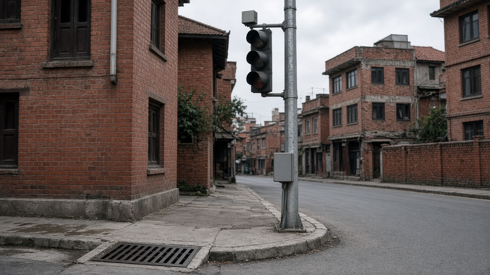
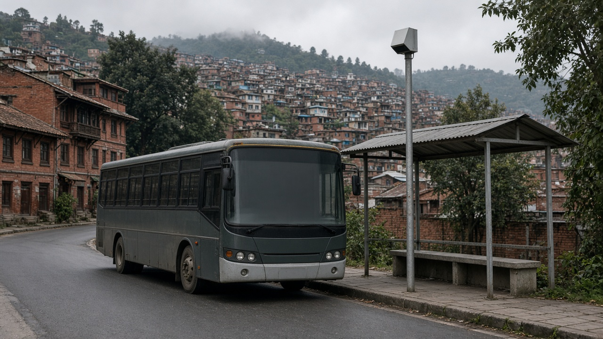
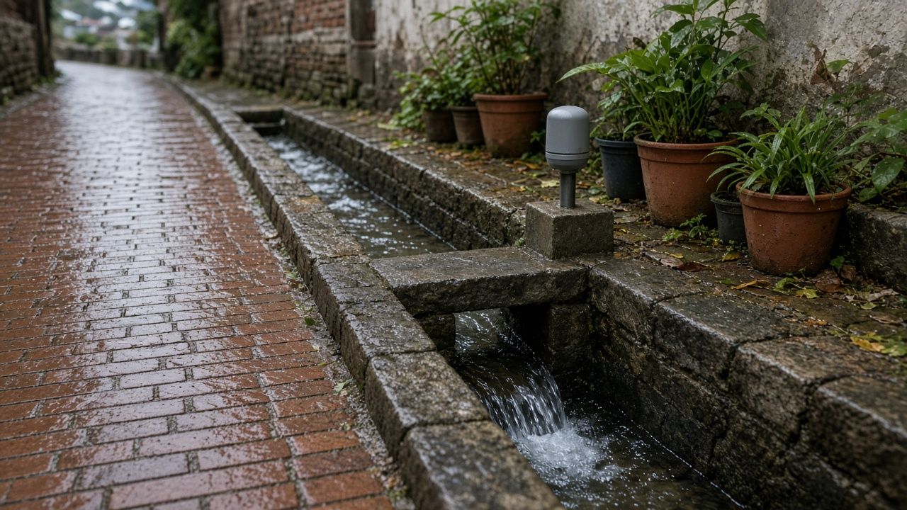

Smart Cities, Sensors, and Open Data
Published on August 20, 2026

A smart city uses digital tools to make streets, utilities, and services more responsive, not to decorate junctions with screens. Sensors on buses, traffic signals, drainage inlets, energy meters, and public buildings can report congestion, flooding, outages, and occupancy in near real time. Open data then lets planners, researchers, and residents see the same maps instead of locking insight inside a vendor dashboard. The value appears when a municipality retimes signals, reroutes waste trucks, or warns of a blocked culvert—not when it buys cameras without a maintenance budget. Kathmandu Valley and growing towns need basic cadastral, building, and bus-route data as much as they need new gadgets.
Technology fails when it is siloed, proprietary, or blind to informal life. Street vendors, shared taxis, and unnumbered lanes disappear from models that only count licensed vehicles. Privacy and surveillance risks rise if footage and location traces have no retention limits or independent oversight. Interoperable standards, local servers, and open licences keep cities from depending on a single contractor. Citizen reporting apps work only if complaints receive replies and field staff are trained. Digital twins of streets and pipes are useful for flood and earthquake scenarios if the underlying surveys are kept current after every monsoon and reconstruction season.
Governance should start with questions: which decisions will this data change, who can access it, and who is excluded? Municipalities can publish bus timetables, building permits, budget spends, and sensor feeds in machine-readable form, while protecting personal identifiers. Emerging municipalities should digitise property records and service requests before investing in control rooms. Success is measured in shorter response times, public reuse of datasets, and whether wards without smartphones still receive the same service. Smartness is institutional capacity plus humble sensors—not a slogan painted on a flyover.

स्मार्ट शहरले सडक, उपयोगिता र सेवालाई बढी प्रतिक्रियाशील बनाउन डिजिटल औजार प्रयोग गर्छ, चौबाटोमा पर्दा सजाउन होइन। बस, ट्राफिक सङ्केत, नाला मुख, ऊर्जा मिटर र सार्वजनिक भवनका सेन्सरले जाम, डुबान, कटौती र उपस्थिति लगभग तत्काल प्रतिवेदन गर्न सक्छन्। खुला डाटाले योजनाकार, अनुसन्धानकर्ता र बासिन्दालाई एउटै नक्सा देखाउँछ, विक्रेता नियन्त्रण पटलभित्र अन्तर्दृष्टि थुन्दैन। मूल्य तब देखिन्छ जब नगरले सङ्केत समय मिलाउँछ, फोहोर गाडी रुट फेर्छ वा थुनिएको पुलिया चेतावनी दिन्छ—मर्मत बजेट बिना दृश्य यन्त्र किन्दा होइन। काठमाडौं उपत्यका र बढ्दो सहरलाई नयाँ उपकरण जत्तिकै आधारभूत कित्ता, भवन र बस रुट डाटा चाहिन्छ।
प्रविधि तब असफल हुन्छ जब अलग, स्वामित्वबद्ध वा अनौपचारिक जीवनप्रति अन्धा हुन्छ। सडक पसले, साझा ट्याक्सी र नम्बर नभएका गल्ली लाइसेन्स सवारी मात्र गन्ने मोडेलबाट हराउँछन्। गोपनीयता र निगरानी जोखिम बढ्छ यदि दृश्य र स्थान खोजीको राख्ने सीमा र स्वतन्त्र निगरानी छैन। अन्तरसञ्चालन मापदण्ड, स्थानीय सर्भर र खुला अनुमतिपत्रले शहरलाई एउटै ठेकेदारमा निर्भर हुनबाट जोगाउँछन्। नागरिक प्रतिवेदन एप तब मात्र चल्छ जब गुनासोको जवाफ आउँछ र क्षेत्र कर्मचारी तालिम पाउँछन्। सडक र पाइपका डिजिटल जुम्ल्याहा बाढी र भूकम्प परिदृश्यमा उपयोगी हुन्छन् यदि प्रत्येक मनसुन र पुनर्निर्माणपछि सर्वेक्षण अद्यावधिक रहन्छ।
शासन प्रश्नबाट सुरु हुनुपर्छ: यो डाटाले कुन निर्णय फेर्छ, कसले पहुँच पाउँछ र को छुट्छ? नगरपालिकाले बस समयतालिका, भवन अनुमति, बजेट खर्च र सेन्सर प्रवाह यन्त्र-पढ्ने रूपमा प्रकाशित गर्न सक्छन्, व्यक्तिगत पहिचान जोगाउँदै। उदाउँदो नगरले नियन्त्रण कक्षमा लगानीअघि सम्पत्ति अभिलेख र सेवा अनुरोध डिजिटल गर्नुपर्छ। सफलता छोटो प्रतिक्रिया समय, डाटासेटको सार्वजनिक पुनःप्रयोग र मोबाइल नभएका वडाले उही सेवा पाउँछन् कि भन्नेमा मापिन्छ। स्मार्टपन संस्थागत क्षमता र विनम्र सेन्सर हो—उड्डयन पुलमा लेखिएको नारा होइन।

स्मार्ट शहर सड़क, उपयोगिता और सेवाओं को अधिक प्रतिक्रियाशील बनाने के लिए डिजिटल औज़ार प्रयोग करता है, चौराहों पर पर्दे सजाने के लिए नहीं। बस, ट्रैफ़िक संकेत, नाली मुख, ऊर्जा मीटर और सार्वजनिक इमारतों के सेंसर जाम, डूबान, कटौती और उपस्थिति लगभग तुरंत रिपोर्ट कर सकते हैं। खुला डेटा योजनाकार, शोधकर्ता और निवासियों को एक ही नक्शा दिखाता है, विक्रेता नियंत्रण पटल में अंतर्दृष्टि नहीं बाँधता। मूल्य तब दिखता है जब नगर संकेत समय मिलाए, कचरा गाड़ी रूट बदले या थुनी पुलिया की चेतावनी दे—रखरखाव बजट बिना दृश्य यंत्र खरीदने पर नहीं। काठमांडू घाटी और बढ़ते नगरों को नए उपकरण जितना ही बुनियादी कित्ता, भवन और बस रूट डेटा चाहिए।
तकनीक तब असफल होती है जब अलग, स्वामित्वबद्ध या अनौपचारिक जीवन के प्रति अंधी हो। सड़क विक्रेता, साझा टैक्सी और नंबरहीन गलियाँ केवल लाइसेंस वाहन गिनने वाले मॉडल से गायब हो जाती हैं। गोपनीयता और निगरानी जोखिम बढ़ता है यदि दृश्य और स्थान निशान की रखने सीमा और स्वतंत्र निगरानी न हो। अंतरसंचालन मानक, स्थानीय सर्वर और खुले अनुमतिपत्र शहर को एक ठेकेदार पर निर्भर होने से बचाते हैं। नागरिक रिपोर्ट ऐप तभी चलता है जब शिकायत का जवाब आए और क्षेत्र कर्मचारी प्रशिक्षण पाएँ। सड़क और पाइप के डिजिटल जुड़वाँ बाढ़ और भूकंप परिदृश्य में उपयोगी हैं यदि हर मानसून और पुनर्निर्माण बाद सर्वेक्षण अद्यतन रहें।
शासन प्रश्नों से शुरू होना चाहिए: यह डेटा कौन सा निर्णय बदलेगा, कौन पहुँच पाएगा और कौन छूटेगा? नगरपालिकाएँ बस समयसारणी, भवन अनुमति, बजट खर्च और सेंसर प्रवाह यंत्र-पढ़ने योग्य रूप में प्रकाशित कर सकती हैं, व्यक्तिगत पहचान बचाते हुए। उभरती नगरपालिकाओं को नियंत्रण कक्ष में निवेश से पहले संपत्ति अभिलेख और सेवा अनुरोध डिजिटल करने चाहिए। सफलता छोटी प्रतिक्रिया समय, डेटासेट का सार्वजनिक पुनःउपयोग और इस बात में मापी जाती है कि मोबाइल न रखने वाले वार्ड वही सेवा पाते हैं या नहीं। स्मार्टपन संस्थागत क्षमता और विनम्र सेंसर है—उड़ान पुल पर लिखा नारा नहीं।